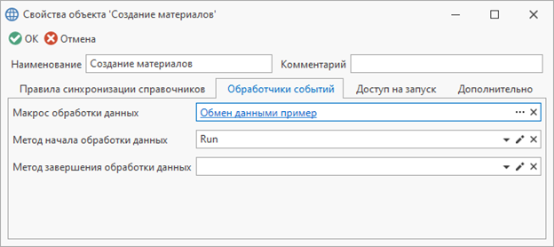

Обработчики событий |
В правиле обмена данными имеется возможность добавить обработчики на события процесса обработки данных. Макрос и метод начала обработки данных добавляются во вкладке "Обработчики событий" диалога свойств правила обмена данными
Вкладка "Обработчики событий"

Пример добавления обработчиков для метода начала обработки данных
C#
/* TFlex.DOCs.SynchronizerReference.dll TFlex.DOCs.Model.Entities.dll System.Xml.Linq.dll*/ using System; using System.Collections.Generic; using System.Xml.Linq; using TFlex.DOCs.Model.References; using TFlex.DOCs.Model.Search.Path; using TFlex.DOCs.Synchronization.Macros; using TFlex.DOCs.Synchronization.OneC; using TFlex.DOCs.Synchronization.SyncData; using TFlex.DOCs.Synchronization.SyncData.Behaviors; using TFlex.DOCs.Synchronization.SyncData.Xml; using TFlex.DOCs.Synchronization.SyncData.Xml.OneC; public class Macro9(ExchangeDataMacroContext context) : ExchangeDataMacroProvider(context) { /// <summary>Метод начала обработки данных на вкладке обработчиков событий</summary> public override void Run() { var behaviors = Context.Settings.Behaviors; // Получаем действия обработки данных behaviors.Add(new StartProviderBehavior(OnStart)); // Добавляем действие запуска обмена данными behaviors.Add(new FinishProviderBehavior(OnFinish)); // Добавляем действие завершения обмена данными behaviors.Add(new LoadDirectionBehavior("Электронная структура изделий", ModifyLoadDirection)); // Добавляем изменение настроек направления загрузки behaviors.Add(new LoadSettingsBehavior("Электронная структура изделий", ModifyLoadSettings)); // Добавляем изменение настроек загрузки // Добавляем параметр в настройки загрузки behaviors.Add(new ParameterToLoadSettingsBehavior("Электронная структура изделий", new Guid("Guid параметра"))); // Обработчик исключения дублей объектов справочника источника по параметрам справочника behaviors.Add(new InputObjectsDistinctBehavior(Context.Connection, "Электронная структура изделий", "Guid параметра")); // Добавляем действие после загрузки связей объектов behaviors.Add(new AfterLoadLinksBehavior("Электронная структура изделий", AfterLoadLinks)); // Добавляем действие связи синхронизируемого объекта после чтения связи с исходного объекта behaviors.Add(new ProcessingRelationAfterReadBehavior("Электронная структура изделий", "Техпроцессы", ProcessingRelationAfterRead)); // Добавляем поиск объекта после того, как он не был найден behaviors.Add(new ProcessingObjectSearchBehavior("Электронная структура изделий", ProcessingObjectSearch)); // Добавляем поиск объектов после того, как они не были найдены behaviors.Add(new ProcessingObjectsSearchBehavior("Электронная структура изделий", ProcessingObjectsSearch)); // Добавляем действие синхронизируемого объекта при найденном реестре для другого справочника или найденных дублей реестров behaviors.Add(new ProcessingObjectRegisterAnotherExistsBehavior("Электронная структура изделий", ProcessingObjectRegisterAnotherExists)); // Добавляем действие параметра синхронизируемого объекта перед конвертацией behaviors.Add(new ProcessingParameterBeforeConversionBehavior("Электронная структура изделий", "Масса", ProcessingParameterBeforeConversion)); // Добавляем действие синхронизируемого объекта перед конвертацией behaviors.Add(new ProcessingObjectBeforeConversionBehavior("Электронная структура изделий", ProcessingObjectBeforeConversion)); // Добавляем действие связи синхронизируемого объекта перед конвертацией behaviors.Add(new ProcessingRelationBeforeConversionBehavior("Электронная структура изделий", "Техпроцессы", ProcessingRelationBeforeConversion)); // Добавляем замену значений синхронизируемого параметра по параметру другого справочника var findPath = ReferencePath.Parse("[Единицы измерения].[Guid]", Context.Connection); // Путь по справочнику для поиска объекта var valuePath = ReferencePath.Parse("[Единицы измерения].[Сокращённое наименование]", Context.Connection); // Путь по справочнику для значения результата behaviors.Add(new ReplaceParameterValueBatchBehavior("Электронная структура изделий", "Единица измерения", findPath, valuePath)); // Добавляем действие параметра синхронизируемого объекта перед установкой значения behaviors.Add(new ProcessingParameterBeforeSetBehavior("Электронная структура изделий", "Масса", ProcessingParameterBeforeSet)); // Добавляем действие связи синхронизируемого объекта после начала редактирования объекта behaviors.Add(new ProcessingRelationAfterBeginChangingBehavior("Электронная структура изделий", "Техпроцессы", ProcessingRelationAfterBeginChanging)); // Задаем файл в параметр синхронизируемого объекта behaviors.Add(new AttachFileParameterBehavior("Электронная структура изделий", "Параметр для файла", AttachFileParameter)); // Добавляем проверку заполнения значения параметра по условию behaviors.Add(new CheckParameterBehavior("Электронная структура изделий", "Масса", CheckParameter)); // Добавляем действие проверки удаления неиспользуемого подключения behaviors.Add(new CanRemoveHierarchyLinkBehavior("Электронная структура изделий", CanRemoveHierarchyLink)); // Добавляем действие синхронизируемого объекта перед сохранением реестра behaviors.Add(new ProcessingObjectRegisterConversionBehavior("Электронная структура изделий", ProcessingObjectRegisterConversion)); // Добавляем проверку обязательного заполнения значения параметра behaviors.Add(new RequiredParameterBehavior("Электронная структура изделий", "Масса")); // Добавляем действие синхронизируемого объекта перед сохранением behaviors.Add(new ProcessingObjectBeforeSavingBehavior("Электронная структура изделий", ProcessingObjectBeforeSaving)); // Добавляем действие синхронизируемого подключения перед сохранением behaviors.Add(new ProcessingHierarchyLinkBeforeSavingBehavior("Электронная структура изделий", BeforeSavingHierarchyLink)); // Добавляем действие параметра синхронизируемого объекта после конвертации behaviors.Add(new ProcessingParameterAfterConversionBehavior("Электронная структура изделий", "Масса", ProcessingParameterAfterConversion)); // Добавляем действие связи синхронизируемого объекта после конвертации behaviors.Add(new ProcessingRelationAfterConversionBehavior("Электронная структура изделий", "Техпроцессы", ProcessingRelationAfterConversion)); // Добавляем действие синхронизируемого объекта после конвертации behaviors.Add(new ProcessingObjectAfterConversionBehavior("Электронная структура изделий", ProcessingObjectAfterConversion)); // Добавляем действие при чтении xml behaviors.Add(new XmlReadDataBehavior(XmlReadData)); // Добавляем действие при записи xml behaviors.Add(new XmlWriteDataBehavior(XmlWriteData)); // Добавляем действие чтения заголовка по формату обмена EnterpriseData от 1С behaviors.Add(new ReadEnterpriseDataBehavior(ReadEnterpriseData)); // Добавляем действие записи заголовка по формату обмена EnterpriseData от 1С behaviors.Add(new WriteEnterpriseDataBehavior(WriteEnterpriseData)); } /// <summary>Действие запуска обмена данными</summary> private void OnStart(SyncDataProvider dataProvider) { } /// <summary>Действие завершения обмена данными</summary> private void OnFinish(SyncDataProvider dataProvider) { } /// <summary>Изменяет настройки направления загрузки</summary> /// <param name="loadDirection">Направление загрузки</param> private void ModifyLoadDirection(ref RelationLoadSettings.RecursiveLoadDirection loadDirection) { } /// <summary>Изменяет настройки загрузки</summary> private void ModifyLoadSettings(LoadSettings loadSettings) { } /// <summary>Действие после загрузки связей объектов</summary> private void AfterLoadLinks(SyncDataReferenceInfo dataReferenceInfo, IReadOnlyCollection<ReferenceObject> objects) { } /// <summary>Действие связи синхронизируемого объекта после чтения связи с исходного объекта</summary> private void ProcessingRelationAfterRead(SyncDataRelation dataRelation) { } /// <summary>Поиск объекта после того, как он не был найден</summary> private void ProcessingObjectSearch(SyncDataObject dataObject) { } // Заполнить dataObject.ReceiverObject = referenceObject /// <summary>Поиск объектов после того, как они не были найдены</summary> private void ProcessingObjectsSearch(IReadOnlyCollection<SyncDataObject> dataObjects) { } // Заполнить dataObject.ReceiverObject = referenceObject /// <summary>Действие синхронизируемого объекта при найденном реестре для другого справочника или найденных дублей реестров</summary> private void ProcessingObjectRegisterAnotherExists(SyncDataObject dataObject, SyncRegisterPairInfo[] registerPairs) { } /// <summary>Действие параметра синхронизируемого объекта перед конвертацией</summary> private void ProcessingParameterBeforeConversion(SyncDataParameter dataParameter) { } /// <summary>Действие синхронизируемого объекта перед конвертацией</summary> private void ProcessingObjectBeforeConversion(SyncDataObject dataObject) { } /// <summary>Действие связи синхронизируемого объекта перед конвертацией</summary> private void ProcessingRelationBeforeConversion(SyncDataRelation dataRelation) { } /// <summary>Действие параметра синхронизируемого объекта перед установкой значения</summary> private void ProcessingParameterBeforeSet(SyncDataParameter dataParameter) { } /// <summary>Действие связи синхронизируемого объекта после начала редактирования объекта</summary> private void ProcessingRelationAfterBeginChanging(SyncDataRelation dataRelation) { } /// <summary>Задание файла в параметр синхронизируемого объекта</summary> private SyncDataFileInfo AttachFileParameter(SyncDataObject dataObject) => new(@"C:\Test.csv"); /// <summary>Проверка заполнения значения параметра по условию</summary> private string CheckParameter(SyncDataParameter dataParameter) => null; // Сообщение ошибки /// <summary>Действие проверки удаления неиспользуемого подключения</summary> private bool CanRemoveHierarchyLink(SyncDataObject dataObject, ComplexHierarchyLink hierarchyLink) => true; /// <summary>Действие синхронизируемого объекта перед сохранением реестра</summary> private void ProcessingObjectRegisterConversion(SyncDataObject dataObject) { } /// <summary>Действие синхронизируемого объекта перед сохранением</summary> private void ProcessingObjectBeforeSaving(SyncDataObject dataObject) { } /// <summary>Действие синхронизируемого подключения перед сохранением</summary> private void BeforeSavingHierarchyLink(SyncDataHierarchyLink dataHierarchyLink) { } /// <summary>Действие параметра синхронизируемого объекта после конвертации</summary> private void ProcessingParameterAfterConversion(SyncDataParameter dataParameter) { } /// <summary>Действие связи синхронизируемого объекта после конвертации</summary> private void ProcessingRelationAfterConversion(SyncDataRelation dataRelation) { } /// <summary>Действие синхронизируемого объекта после конвертации</summary> private void ProcessingObjectAfterConversion(SyncDataObject dataObject) { } /// <summary>Действие при чтении xml</summary> private void XmlReadData(XDocument xDocument) { } /// <summary>Действие при записи xml</summary> private void XmlWriteData(XDocument xDocument) { } /// <summary>Действие чтения заголовка по формату обмена EnterpriseData от 1С</summary> private void ReadEnterpriseData(EnterpriseDataHeader header) { } /// <summary>Действие записи заголовка по формату обмена EnterpriseData от 1С</summary> private EnterpriseDataHeader WriteEnterpriseData() => new(); }